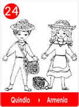
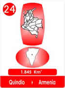
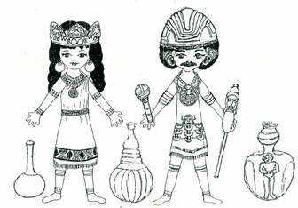

El pueblo Quimbaya escogió como Cacique al mejor atleta de su región, era el joven y apuesto Quindío, a quien llamaban, el dueño del río.
Al posesionarse como Cacique, habló así a su gente;
"Espero poder estar con ustedes por muchas lunas y disfrutar con todos, lo que nos ha dado El Señor del Gran Poder, dueño de todo lo que existe en la Madre Tierra.
Quiero invitarles a imitar al Señor del Gran Poder que nunca descansa, porque Nobleza Obliga. Nos da el Sol, el Agua y es su Luna la que nos indica el tiempo para sembrar y recoger los frutos de la Madre Tierra, además nos alegra cada noche con sus estrellas!
Por eso cada vez que alguno de ustedes descanse, debe primero sonreír así El Señor del Gran Poder, sabrá que estamos agradecidos y contentos.
Propongo un premio en cada Luna llena, para celebrar la mejor siembra, al mejor tejido, al más bello objeto de oro, al mejor fruto, al mejor maíz, la mejor pieza de barro o las labores de cabuya. Nombraremos buenos Jueces.
Cuando se sientan rendidos, miren al Sol, que siempre sale, y miren el Agua que siempre está dispuesta a servir para dar vida, son las señales que puso el Señor del Gran Poder para protegernos, El AMA su Pueblo, nunca nos falla!!
Hagan lo mismo; Nobleza Obliga, que nuestro pueblo sea pura nobleza.
Al que no le guste sonreír, que se vaya para otra región que hay muchas más.
Las labores del Pueblo Quimbaya deben tener el sello del oro que no se daña, bellos para siempre, así serán muchos los que admiren la excelencia de sus trabajos.
Ordeno a los Joyeros, dibujar las sonrisas del Pueblo Quimbaya para que nadie pueda olvidar su existencia, como el pueblo sonriente, apacible y agradecido, por todo lo que recibe del Señor del Gran Poder.
Entonces el Consejo de Ancianos que rodeaban y eligieran al nuevo Cacique, se sintieron muy contentos y sonrieron felices.
El más Anciano dijo;
En nombre del pueblo, aquí reunido queremos decir, que nos sentimos muy satisfechos pues nuestro mejor atleta ha hablado con mucha sabiduría e inteligencia. Nosotros lo respaldamos y aunque somos un pueblo pequeño trataremos de cumplir para que otros pueblos, también aprendan a sonreír y sepan agradecer al señor del gran poder por todo lo que nos proporciona.
De pronto una mujer levantó a su bebecito y dijo:
Los niños también van a sonreír, les haremos juguetes de barro para que conozcan como utilizamos lo que hacemos, ellos nos ayudaran jugando y así aprenderán a sonreír.
Desde ese momento el Pueblo Quimbaya se comprometió a sonreír.
Y El Tesoro que Ellos Dejaron aunque no Esté en Su Patria, es fiel testigo de la excelencia de sus trabajos y sobre todo ejemplo de la dulzura de sus sonrisas y su carácter.
Así lo certificaron los Cronistas.
